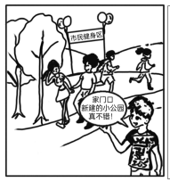

2024 年全国硕士研究生招生考试英语（一）
Section I Use of English
Directions:
Read the following text. Choose the best word(s) for each numbered blank and mark A, B, C or D on the ANSWER SHEET. (10 points)
There’s nothing more welcoming than a door opening for you. 1 the need to be touched to open or close, automatic doors are essential in 2 disabled access to buildings and helping provide general 3 to commercial buildings.
Self-sliding doors began to emerge as a commercial product in 1960 after being invented six years 4 by Americans Dee Horton and Lew Hewitt. They 5 as a novelty feature, but as their use has grown, their 6 have extended within our technologically advanced world. Particularly 7 in busy locations or during times of emergency, the doors 8 crowd management by reducing the obstacles put in people’s way.
9 making access both in and out of buildings easier for people, the difference in the way many of these doors open helps reduce the total area 10 by them. Automatic doors often open to the side, with the panels sliding across one another. Replacing swing doors, these 11 smaller buildings to maximise the usable space inside without having to 12 the way for a large, sticking-out door. There are many different types of automatic door, with each 13 specific signals to tell them when to open. 14 these methods differ, the main 15 remain the same.
Each automatic door system 16 the light, sound, weight or movement in their vicinity as a signal to open. Sensor types are chosen to 17 the different environments they are needed in. 18 , a busy street might not 19 a motion-sensored door, as it would constantly be opening for passers-by. A pressure-sensitive mat would be more 20 to limit the surveyed area.
Section II Reading Comprehension
Part A
Directions:
Read the following four texts. Answer the questions below each text by choosing A, B, C or D. Mark your answers on the ANSWER SHEET. (40 points)
Text 1
Nearly 2,000 years ago, as the Romans began to pull out of Scotland, they left behind a curious treasure: 10 tons of nails, nearly a million of the things. The nail hoard was discovered in 1960 in a four-metre-deep pit covered by two metres of gravel.
Why had the Romans buried a million nails? The likely explanation is that the withdrawal was rushed, and they didn’t want the local Caledonians getting their hands on 10 tons of weapon-grade iron. The Romans buried the nails so deep that they would not be discovered for almost two millennia.
Later civilisations would value the skilled blacksmith’s labour in a nail even more than the raw material. As Roma Agrawal explains in her new delightful book Nuts and Bolts, early 17th-century Virginians would sometimes burn down their homes if they were planning to relocate. This was an attempt to recover the valuable nails, which could be reused after sifting the ashes. The idea that one might burn down an entire house just to reclaim the nails underlines how scarce, costly and valuable the simple-seeming technology was.
The price of nails fell by 90% between the late 1700s and mid-1900s, as economist Daniel Sichel points out in a research paper. According to Sichel, although the falling price of nails was driven partly by cheaper iron and cheaper energy, most of the credit goes to nail manufacturers who simply found more efficient ways to turn steel into nails.
Nails themselves have changed over the years, but Sichel studied them because they haven’t changed much. Roman lamps and Roman chariots are very different from LED strips and sports cars, but Roman nails are still clearly nails. It would be absurd to try to track the changing price of sports cars since 1695, but to ask the same question of nails makes perfect sense.
I make no apology for being obsessed by a particular feature of these objects: their price. I am an economist, after all. After writing two books about the history of inventions, one thing I’ve learnt is that while it is the enchantingly sophisticated technologies that get all the hype, it’s the cheap technologies that change the world.
The Gutenberg printing press transformed civilisation not by changing the nature of writing but by changing its cost — and it would have achieved little without a parallel collapse in the price of surfaces to write on, thanks to an often-overlooked technology called paper. Solar panels had few niche uses until they became cheap; now they are transforming the global energy system.
21. The Romans buried the nails probably for the sake of ____
22. The example of early 17th-century Virginians is used to ____
23. What played the major role in lowering the price of nails after the late 1700s?
24. It can be learned from Paragraph 5 that nails ____
25. Which of the following best summarises the last two paragraphs?
Text 2
Parenting tips obtained from hunter-gatherers in Africa may be the key to bringing up more contented children, researchers have suggested. The idea is based on studies of communities such as the Kung of Botswana, where each child is cared for by many adults. Kung children as young as four will help to look after younger ones and “baby-wearing”, in which infants are carried in slings, is considered the norm.
According to Dr Nikhil Chaudhary, an evolutionary anthropologist at Cambridge University, these practices, known as alloparenting, could lead to less anxiety for children and parents.
Dr Annie Swanepoel, a child psychiatrist, believes that there are ways to incorporate them into western life. In Germany, one scheme has paired an old people’s home with a nursery. The residents help to look after the children, an arrangement akin to alloparenting. Another measure could be encouraging friendships between children in different school years, to mirror the unsupervised mixed-age playgroups in hunter-gatherer communities.
In a paper published in the Journal of Child Psychology and Psychiatry, researchers said that the western nuclear family was a recent invention which broke with evolutionary history. This abrupt shift to an “intensive mothering narrative”, which suggests that mothers should manage childcare alone, was likely to have been harmful. “Such narratives can lead to maternal exhaustion and have dangerous consequences,” they wrote.
By contrast, in hunter-gatherer societies adults other than the parents can provide almost half of a child’s care. One previous study looked at the Efé people of the Democratic Republic of Congo. It found that infants had an average of 14 alloparents a day by the time they were 18 weeks old, and were passed between caregivers eight times an hour.
Chaudhary said that parents now have less childcare support from family and social networks than during most of humans’ evolutionary history, but introducing additional caregivers could reduce stress and maternal depression, which could have a “knock-on” benefit to a child’s wellbeing. An infant born to a hunter-gatherer society could have more than ten caregivers — this contrasts starkly to nursery settings in the UK where regulations call for a ratio of one carer to four children aged two to three.
While hunter-gatherer children learnt from observation and imitation in mixed-age playgroups, researchers said that western “instructive teaching”, where pupils are asked to sit still, may contribute to conditions such as attention deficit hyperactivity disorder. Chaudhary said that Britain should explore the possibility that older siblings helping their parents “might also enhance their own social development.”
26. According to the first two paragraphs, alloparenting refers to the practice of ____
27. The scheme in Germany is mentioned to illustrate ____
28. According to Paragraph 4, the “intensive mothering narrative” ____
29. According to Paragraph 6, what can we learn about the nurseries in the UK?
30. Which of the following would be the best title for the text?
Text 3
A Polish digital artist who uses classical painting styles to create dreamy fantasy landscapes, Greg Rutkowski has made illustrations for games such as Dungeons & Dragons and Magic: The Gathering. And he’s become a sudden hit in the new world of text-to-image AI generation.
His distinctive style is now one of the most commonly used prompts in the new open-source AI art generator Stable Diffusion. The tool, along with other popular image-generation AI models, allows anyone to create impressive images based on text prompts. For example, type in “Wizard with sword and a glowing orb of magic fire fights a fierce dragon Greg Rutkowski,” and the system will produce something that looks not a million miles away from works in Rutkowski’s style.
But these open-source programs are built by scraping images from the internet, often without permission and proper attribution to artists. As a result, they are raising tricky questions about ethics and copyright. And artists like Rutkowski have had enough.
According to the website Lexica, which tracks over 10 million images and prompts generated by Stable Diffusion, Rutkowski’s name has been used as a prompt around 93,000 times. Rutkowski was initially surprised but thought it might be a good way to reach new audiences. Then he tried searching for his name to see if a piece he had worked on had been published. The online search brought back work that had his name attached to it but wasn’t his.
“It’s been just a month. What about in a year? I probably won’t be able to find my work out there because the internet will be flooded with AI art,” Rutkowski says. “That’s concerning.”
Other artists besides Rutkowski have been surprised by the apparent popularity of their work in text-to-image generators — and some are now fighting back. Karla Ortiz, an illustrator based in San Francisco who found her work in Stable Diffusion’s data set, has been raising awareness about the issues around AI art and copyright.
Artists say they risk losing income as people start using AI-generated images based on copyrighted material for commercial purposes. But it’s also a lot more personal, Ortiz says, arguing that because art is so closely linked to a person, it could raise data protection and privacy problems.
“There is a coalition growing within artist industries to figure out how to tackle or mitigate this,” says Ortiz. The group is in its early days of mobilization, which could involve pushing for new policies or regulation. One suggestion is that AI models could be trained on images in the public domain, and AI companies could forge partnerships with museums and artists, Ortiz says.
31. What can be learned about Rutkowski from the first two paragraphs?
32. The problem with open-source AI art generators is that they ____
33. After searching online, Rutkowski found ____
34. According to Ortiz, AI companies are advised to ____
35. What is the text mainly about?
Text 4
The miracle of the Chesapeake Bay lies not in its depths, but in the complexity of its natural construction, the interaction of fresh and saline waters, and the mix of land and water. The shallows provide homes for hundreds of species while storing floodwaters, filtering pollutants from water, and protecting nearby communities from potentially destructive storm surges.
All this was put at great risk late last month, when the U.S. Supreme Court issued a ruling in an Idaho case that provides the U.S. Environmental Protection Agency (EPA) far less authority to regulate wetlands and waterways. Specifically, a 5-4 majority decided that wetlands protected by the EPA under its Clean Water Act authority must have a “continuous surface connection” to bodies of water. This narrowing of the regulatory scope was a victory for builders, mining operators and other commercial interests often at odds with environmental rules. And it carries “significant repercussions for water quality and flood control throughout the United States,” as Justice Brett Kavanaugh observed.
In Maryland, the good news is that there are many state laws in place that provide wetlands protections. But that’s a very shortsighted view, particularly when it comes to the Chesapeake Bay. The reality is that water, and the pollutants that so often come with it, don’t respect state boundaries. The Chesapeake draws from a 64,000-square-mile watershed that extends into Virginia, Pennsylvania, New York, West Virginia, the District of Columbia and Delaware. Will those jurisdictions extend the same protections now denied under Sackett v. EPA? Perhaps some, but all? That seems unlikely.
It is too easy, and misleading, to see such court rulings as merely standing up for the rights of land owners when the consequences can be so dire for their neighbors. And it’s a reminder that the EPA’s involvement in the Chesapeake Bay Program has long been crucial as the means to transcend the influence of deep-pocketed special interests in neighboring states. Pennsylvania farmers, to use one telling example, aren’t thinking about next year’s blue crab harvest in Maryland when they decide whether to spread animal waste on their fields, yet the runoff into nearby creeks can have enormous impact downstream.
And so we would call on state lawmakers from Richmond to Albany to consider reviewing their own wetlands protections and see for themselves the enormous stakes involved. We can offer them a visit to Blackwater National Wildlife Refuge in Dorchester County where bald eagles fly over tidal marshes so shallow you could not paddle a boat across them but teaming with aquatic life. It’s worth the scenic drive.
36. The Chesapeake Bay is described in Paragraph 1 as ____
37. The U.S. Supreme Court’s ruling in the Idaho case ____
38. How does the author feel about future of the Chesapeake Bay?
39. What can be inferred about the EPA’s involvement in the Chesapeake Bay Program?
40. The author holds that the state lawmakers should ____
Part B
Directions:
Read the following comments on a report about American museums returning artifacts to their countries of origin and a list of statements summarizing the comments. Choose the best statement from the list A-G for each numbered name (41-45). There are two extra choices which you do not need to use. Mark your answers on the ANSWER SHEET. (10 points)
(41) Hannah
Simply, there are people in Nigeria who cannot travel to the Smithsonian Institution to see that part of their history and culture represented by the Benin Bronzes. These should be available to them as part of their cultural heritage and history and as a source of national pride. There is no good reason that these artifacts should be beyond the ordinary reach of the educational objectives or inspiration of the generations to which they were left. They serve no purpose in a museum in the United States or elsewhere except as curious objects. They cannot be compared to works of art produced for sale which can be passed from hand to hand and place to place by purchase. (42) Buck
We know very exact reproductions of artwork can be and are regularly produced. Perhaps museums and governments might explore some role for the use of nearly exact reproductions as a means of resolving issues relating to returning works of art and antiquities. The context of any exhibit is more important to me than whether the object being displayed is 2000 years old or 2 months old. In many cases the experts have a hard time agreeing on what is the real object and what is a forgery. Again, the story an exhibit is trying to tell is what matters. The monetary value of the objects on display is a distant second place in importance. (43) Sara
When visiting the Baltimore Museum of Art, I came across a magnificent 15th-century Chinese sculpture. It inspired me to learn more about the culture that it represented. Artifacts in museums have the power to inspire, and perhaps spark that need to learn and understand the nature of their creators. Having said that, I do feel that whatever artifacts find their way to public museums should, in fact, be sanctioned as having been obtained on loan, legally purchased, or obtained by treaty. Stealing artifacts from other peoples’ cultures is obscene; it robs not only the physical objects, but the dignity and spirit of their creators. (44) Victor
Ancient art that is displayed in foreign countries by all means should be returned to the original country. The foreign countries have no right to hold back returning the items. I would ask that the foreign nations and the original country discuss the terms of transfer. Yes, there is the risk that the original country will not have as good security as do the foreign countries. But look at what happened to Boston’s Gardner Museum theft in 1990, including the loss of Rembrandt, Vermeer, Manet, and other masterpieces. Nothing is absolutely safe, nowhere. And now Climate Change agitators are attacking publicly displayed works in European museums. (45) Julia
To those of you in the comments section who are having strong feelings about artifacts being removed from cities in the US and Britain and returned to their countries of origin, I would ask you to consider: why do you think Americans have more of a right to easily access the Benin Bronzes than the people of Nigeria? Why are people who live within a day’s drive of London entitled to go and see the Elgin Marbles whenever they want, but the people of Athens aren’t? What intrinsic factors make the West a suitable home for these artifacts but preclude them from being preserved and displayed by their countries of origin? If your conclusion is that the West is better able to preserve these artifacts, think about why you’re assuming that to be true.
Part C
Directions:
Read the following text carefully and then translate the underlined segments into Chinese. Write your answers on the ANSWER SHEET. (10 points)
“Elephants never forget” — or so they say — and that piece of folklore seems to have some foundation.
The African savanna elephant, also known as the African bush elephant, is distributed across 37 African countries. They move between a variety of habitats, including forests, grasslands, woodlands, wetlands and agricultural land. (46) They sometimes travel more than sixty miles to find food or water, and are very good at working out where other elephants are — even when they are out of sight. Using tracking devices, researchers have shown that they have “remarkable spatial acuity.” When finding their way to waterholes, they headed off in exactly the right direction, on one occasion from a distance of roughly thirty miles. What is more, they almost always seem to choose the nearest waterhole. (47) The researchers are convinced that the elephants always know precisely where they are in relation to all the resources they need, and can therefore take shortcuts, as well as following familiar routes.
Although the cues used by African elephants for long-distance navigation are not yet understood, smell may well play a part.
Elephants are very choosy eaters, but until recently little was known about how they selected their food. (48) One possibility was that they merely used their eyes and tried out the plants they found, but that would probably result in a lot of wasted time and energy, not least because their eyesight is actually not very good.
(49) The volatile chemicals produced by plants can be carried a long way, and they are very characteristic: Each plant or tree has its own particular odor signature. What is more, they can be detected even when they are not actually visible. New research suggests that smell is a crucial factor in guiding elephants — and probably other herbivores — to the best food resources.
The researchers first established what kinds of plant the elephants preferred either to eat or avoid when foraging freely. They then set up a “food station” experiment, in which they gave the elephants a series of choices based only on smell. (50) The experiment showed that elephants may well use smell to identify patches of trees that are good to eat, and secondly to assess the quality of the trees within each patch. Free-ranging elephants presumably also use this information to locate their preferred food.
Their well-developed hippocampal structures may enable elephants, like rats and people, to construct cognitive maps.
Section III Writing
Part A
51. Directions:
Read the following email from an international student and write a reply.
Dear Li Ming,
I’ve got a class assignment to make an oral report on an ancient Chinese scientist, but I’m not sure how to prepare for it. Can you give me some advice? Thank you for your help. Yours, Paul Write your answer in about 100 words on the ANSWER SHEET. Do not use your own name in your email; use “Li Ming” instead. (10 points)
Part B
52. Directions:
Write an essay based on the picture and the chart below. In your essay, you should
1) describe the picture and the chart briefly,
2) interpret the implied meaning, and
3) give your comments.
Write your answer in 160-200 words on the ANSWER SHEET. (20 points)
